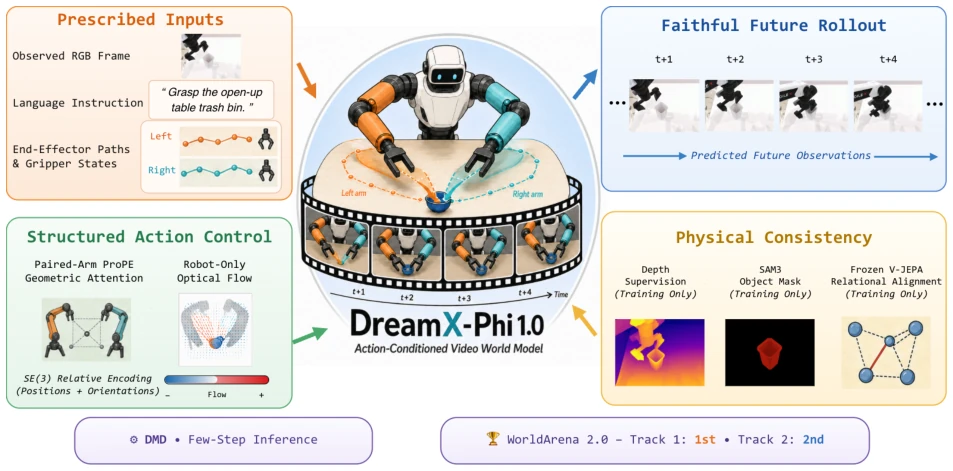
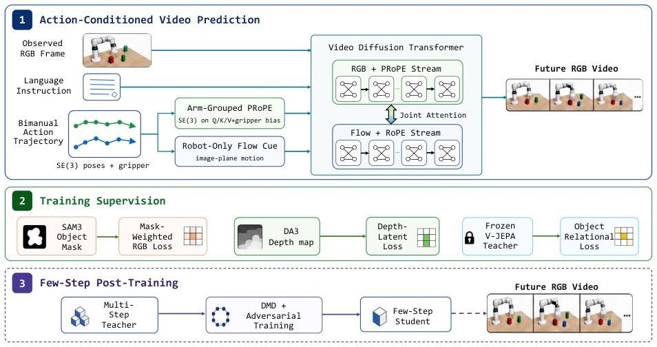
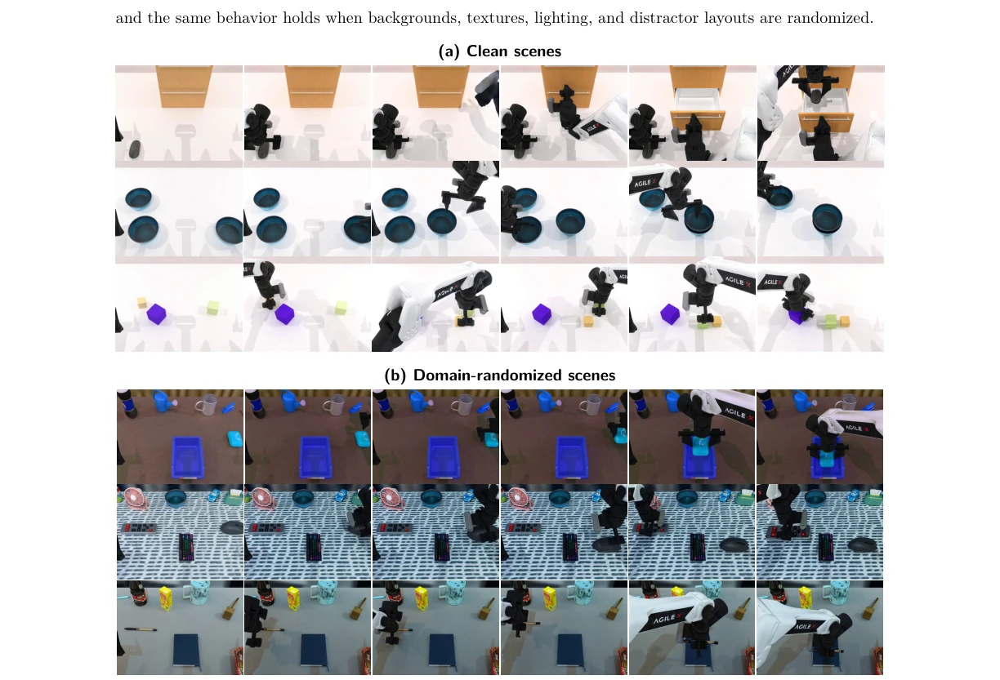

This paper secured first place on WorldArena 2.0, truly demonstrating its merit. DreamX-Phi 1.0 is essentially an "action-conditioned video generator", but it attempts to solve a perennial problem: generated videos look similar but are physically incorrect. It uses PRoPE to inject SE(3) transformations into the attention mechanism, attempting to lock the manipulator's motion trajectory, and uses a depth branch and V-JEPA teacher to keep objects from flying around. However, it is essentially a Forward Dynamics Model, relying on external action sequences and unable to plan itself. This is like giving you a Ferrari, but someone else is holding the steering wheel. Although Track 2 can be used to train policies, the closed-loop control capability is not yet confirmed. Data cleaning is quite rigorous, even keeping failure cases, which is commendable. Overall, it is a strong foundation, but still lacks a policy head to reach a true "embodied intelligence brain".
研究动机Motivation
现有的世界模型往往追求视觉逼真，却忽略了动作的忠实性（faithfulness）。比如 UniSim, iVideoGPT, DreamX-World 等模型虽然能预测动态，但可能生成“看起来对但动作错”的视频（Yang et al., 2024; Wu et al., 2024）。IRASim, Vid2World 等方法将动作编码为紧凑 token，丢失了刚体几何结构（Zhu et al., 2025; Huang et al., 2025）。FlowWAM 用光流表示动作，但没保留连续轨迹（Chen et al., 2026）。DreamX-Phi 旨在解决“逼真不等于可信”的问题，确保预测尊重每个机械臂的指令路径，并维持场景几何和物体状态的一致性。
Existing world models often pursue visual realism but ignore action faithfulness (faithfulness). For example, models such as UniSim, iVideoGPT, DreamX-World can predict dynamics but may generate videos that "look right but act wrong" (Yang et al., 2024; Wu et al., 2024). Methods like IRASim, Vid2World encode actions as compact tokens, losing rigid body geometric structure (Zhu et al., 2025; Huang et al., 2025). FlowWAM uses optical flow to represent actions but does not preserve continuous trajectories (Chen et al., 2026). DreamX-Phi aims to solve the problem that "realism does not equal credibility", ensuring predictions respect each manipulator's instruction path and maintain consistency of scene geometry and object states.

Figure 1 Overview of DreamX-Phi 1.0, an action-conditioned video world model that predicts future observations from a single frame and prescribed bimanual actions.
方法Method
整体基于 Wan2.2-TI2V-5B 扩散 Transformer，输入为 RGB 帧、语言指令和双机械臂动作轨迹。核心创新有三点：1. PRoPE 控制：将 SE(3) 变换直接注入 Self-Attention，按机械臂分组，保留刚体运动结构，而非简单 token 嵌入（Li et al., 2025a）。2. 几何与物体监督：增加轻量深度分支（DA3）约束 3D 结构；用 SAM3 掩码加权 RGB 损失，聚焦操作区域；冻结 V-JEPA 老师约束物体时空演化（Assran et al., 2025; Carion et al., 2025）。3. 少步推理：通过 DMD 蒸馏将多步生成压缩为几步，提升部署效率（Yin et al., 2024a）。数据方面，混合了 Ego4D、AgiBot 等真实与仿真数据，保留失败案例以增强鲁棒性。所有动作序列被归一化为 LeRobot v2.1 格式，确保异构数据对齐。训练时采用 Flow-Matching 目标，并在推理阶段通过 DMD 进行分布匹配蒸馏。
Overall based on Wan2.2-TI2V-5B diffusion Transformer, inputs are RGB frames, language instructions, and dual-manipulator action trajectories. There are three core innovations: 1. PRoPE Control: Injecting SE(3) transformations directly into Self-Attention, grouped by manipulator, preserving rigid body motion structure rather than simple token embeddings (Li et al., 2025a). 2. Geometry and Object Supervision: Adding a lightweight depth branch (DA3) to constrain 3D structure; using SAM3 mask-weighted RGB loss to focus on operation areas; freezing V-JEPA teacher to constrain object spatiotemporal evolution (Assran et al., 2025; Carion et al., 2025). 3. Few-step Inference: Compressing multi-step generation into a few steps via DMD distillation to improve deployment efficiency (Yin et al., 2024a). Regarding data, mixing real and simulated data such as Ego4D, AgiBot, retaining failure cases to enhance robustness. All action sequences are normalized to LeRobot v2.1 format to ensure heterogeneous data alignment. Flow-Matching objective is adopted during training, and distribution matching distillation is performed via DMD during the inference stage.

Figure 2 Overview of the DreamX-Phi 1.0 framework. (1) Given an observed RGB frame, a language instruction, and an externally specified bimanual action trajectory, a Wan2.2-TI2V-5B video diffusion transformer predicts the future RGB video. Arm-grouped PRoPE and a robot-only optical-flow cue provide complementary geometric and image-plane action conditioning. (2) During training, SAM3-derived masks reweight the RGB objective, Depth Anything 3 (DA3) depth maps provide targets for the depth-latent objective, and a frozen V-JEPA teacher supplies object-relational supervision. (3) DMD with adversarial training distills the multi-step teacher into a few-step student.
Evaluated on WorldArena 2.0, Track 1 predicts videos, Track 2 uses the model to train policies. Baselines include Alpha-World, FlowWAM, GigaWorld, etc. Metrics used are EWMScore-P and policy success rate. Results: Track 1 won first place (EWMScore-P 60.65), Track 2 won second place (67.19% success rate). Offline WorldArena 1.0 score 76.88. Track 2 only evaluated the Adjust Bottle task, policy based on pi_0.5 optimization. Ablation experiments were not detailed, but emphasized component synergy. Limitations lie in only evaluating RoboTwin and WorldArena, and not generating actions themselves.

Figure 3 Qualitative WorldArena 2.0 Track 1 rollouts from DreamX-Phi 1.0. Each row is a predicted episode, with frames sampled in temporal order from left to right. (a) Standard RoboTwin 2.0 scenes. (b) Domain-randomized scenes with varied backgrounds, textures, lighting, and distractor objects.